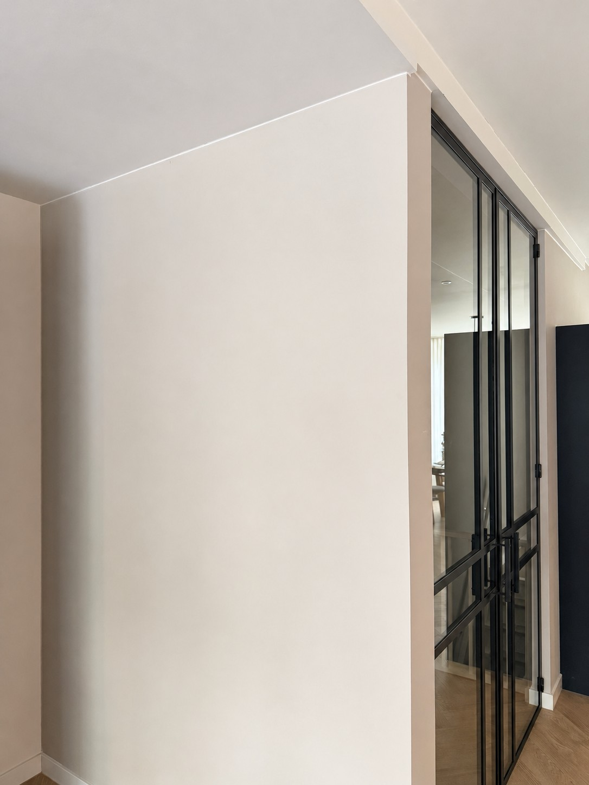

Your space.
Your composition.
Colour, light, and a little imagination.
Make something that feels entirely yours.
One link.
Endless possibilities.
Compose
Choose the links, colours and finishes that feel like you.
Find your scale
Explore the length and price of your composition.
Bring it home
See a styling preview in your own room photograph.
A composition.
Only you could make.
Start with Blue Fade. Make it your own.
Every adjustment becomes part of the picture.
How much space do you have?
For one straight hanging chain. Curved arrangements have a different installed span.
Length estimate: 16.5 cm for the first link + 11.5 cm for each additional link. Handmade pieces and hanging geometry vary. Prices are an EUR snapshot from 27 October 2026; final price, delivery and mounting suitability are confirmed by BRISÉNN.
Imagine it.
Right here.
The same composition. A different perspective.
Upload your room, set a scale, find its place.

 ACTUAL BRISÉNN PRODUCT PHOTOGRAPHY
ACTUAL BRISÉNN PRODUCT PHOTOGRAPHYA material
with presence.
Light passes through polished acrylic. Matte surfaces soften it. Together, they give a simple connection an entirely new dimension.